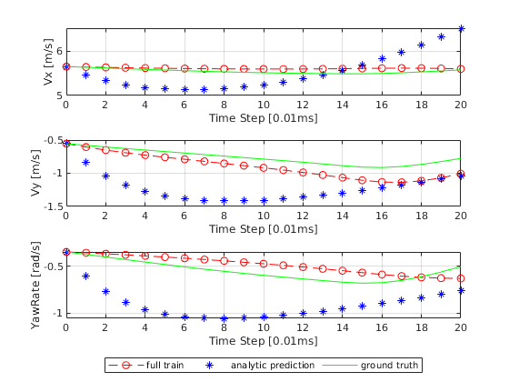
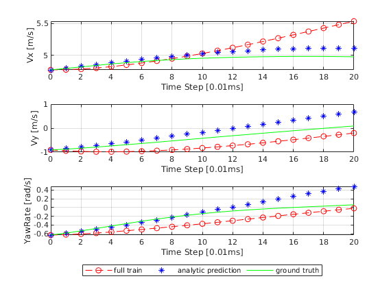
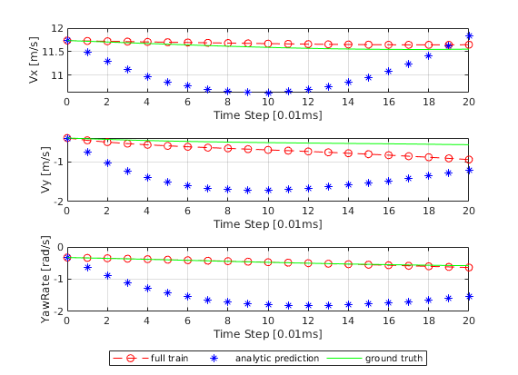
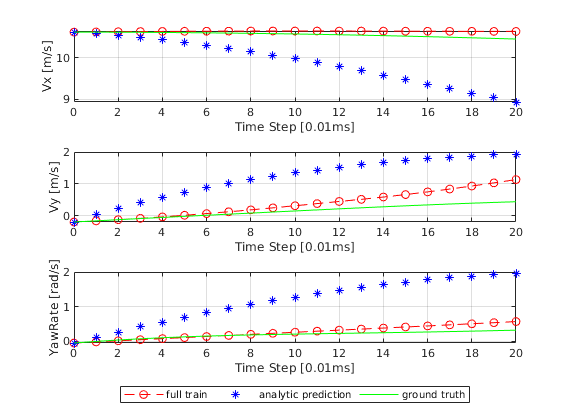
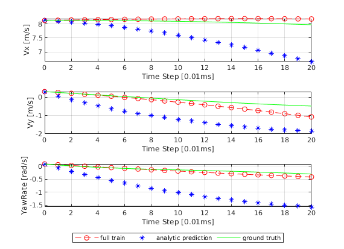

Contents
function report_list = prediction_check_full_train(PLOT_DATA, seed, NN_NAME, FILE_NAME, TEST_NUM, Ts, Np)
close all
fprintf("\n======== Prediction Test at %s ========\n", char(datetime))
======== Prediction Test at 2023-05-08 16:10:55 ========
constants
if nargin == 3
FILE_NAME = "0501_0133PM";
TEST_NUM = 5;
Ts = 0.01; Np = 100; Nc = Np;
elseif nargin < 5
NN_NAME = "0508_0339PM/21000";
FILE_NAME = "0508_1258PM";
TEST_NUM = 5;
Ts = 0.01; Np = 20; Nc = Np;
PLOT_DATA = true;
end
TEST_TRAIN_DATA_RATE = 0.1; Nc = Np;
overwrite constant!
seed = 20135;
simulation constants
state_num = 3;
control_num = 3;
prediction test constants
fprintf("test seed: %d\n", seed)
rng(seed)
format shortEng
format compact
test seed: 20135
network load
fprintf("Loading Neural Network NN_NAME: %s\n", NN_NAME)
nn = "./savemodel/" + NN_NAME + ".onnx";
nn = importONNXNetwork( ...
nn, TargetNetwork="dlnetwork", InputDataFormats="BC", OutputDataFormats="BC" ...
);
Loading Neural Network NN_NAME: 0508_0339PM/21000
data load
fprintf("Loading DataSet FILE_NAME: %s\n", FILE_NAME)
shuffled_file_name = "processed_csv_data/shuffled_" + FILE_NAME +".csv";
ori_file_name = "processed_csv_data/" + FILE_NAME + ".csv";
shuffled_CM_data = readtable(shuffled_file_name);
CM_data = readtable(ori_file_name);
shuffled_CM_data = table2array(shuffled_CM_data);
CM_data = table2array(CM_data);
[data_num, var_num] = size(shuffled_CM_data);
[ori_data_num, var_num] = size(CM_data);
Loading DataSet FILE_NAME: 0508_1258PM
test data index peek
test_data_index = randi(floor(sample_num*TEST_TRAIN_DATA_RATE), 1, TEST_NUM);
test_data_num = floor(data_num*TEST_TRAIN_DATA_RATE);
shuffled_CM_data = shuffled_CM_data(1:test_data_num, :);
target, prediction calc
shuffled_index = shuffled_CM_data(:,1);
ori_time_list = CM_data(:,2);
CM_data = CM_data(:,3:end);
prediction_Grad_list = zeros(1+Np, state_num*TEST_NUM);
prediction_analytic_list = zeros(1+Np, state_num*TEST_NUM);
obs_state_list = zeros(1+Np, state_num*TEST_NUM);
report_list = zeros(TEST_NUM, 4);
control_list = zeros(Np, control_num*TEST_NUM);
q = 1;
fprintf("Prediction Start\n")
while true
if q == TEST_NUM+1
break
end
test_idx = shuffled_index(randi(test_data_num));
if test_idx+Np > ori_data_num
continue
end
time_step_list = ori_time_list(test_idx+1:test_idx+Np-1, 1) - ori_time_list(test_idx:test_idx+Np-2, 1);
time_step_test = sum(time_step_list < 0.011) == Np-1;
if time_step_test
pred_target = CM_data(test_idx, 1:3);
sample = CM_data(test_idx, 4:end);
pred_target = pred_target';
sample = sample';
else
continue
end
f0 = analy_F(sample);
dfdx0 = analy_dFdX(sample);
input_sample = dlarray(sample, "CB");
g0 = extractdata(predict(nn, input_sample));
prediction_err = pred_target - g0;
report_list(q, 2) = norm(prediction_err, 2);
dgdx0 = zeros(3,6);
for i = 1:1:3
[v,grad] = dlfeval(@model,nn,input_sample, i);
tmp = extractdata(grad);
dgdx0(i,:) = tmp(1:6);
end
sample = sample(1:6);
cur_state = sample(1:3);
obs_traj = CM_data(test_idx:test_idx+Np, 1:end);
obs_state = obs_traj(:,4:6);
obs_state_list(:, (q-1)*3+1:(q-1)*3+3) = obs_state;
report_list(q, 1) = obs_state(1) * 3.6;
obs_control = obs_traj(1:end-1,7:9);
control_list(:, (q-1)*3+1:(q-1)*3+3) = obs_control;
obs_control = obs_control';
controlInput = reshape(obs_control, [], 1);
Dx_analytic = f0 - dfdx0 * sample;
Dx_proposed = g0 - dgdx0 * sample;
Dx_analytic = Dx_analytic * Ts;
Dx_proposed = Dx_proposed * Ts;
[traj, err] = pred_err_calc(dgdx0, Dx_proposed, cur_state, obs_state, controlInput, Np, Nc, Ts);
prediction_Grad_list(:, (q-1)*3+1:(q-1)*3+3) = traj;
report_list(q, 3) = norm(err, 2);
[traj, err] = pred_err_calc(dfdx0, Dx_analytic, cur_state, obs_state, controlInput, Np, Nc, Ts);
prediction_analytic_list(:, (q-1)*3+1:(q-1)*3+3) = traj;
report_list(q, 4) = norm(err, 2);
q = q+1;
end
Prediction Start
plot and report
report_list = array2table(report_list, 'VariableNames', ...
{'Vx0', 'pred_err', 'full', 'analytic'});
report_list = varfun(@mean, report_list, 'InputVariables', @isnumeric);
traj_err = [ ...
sqrt(mean(reshape(mean((prediction_Grad_list - obs_state_list).^2), [], TEST_NUM),2))'
sqrt(mean(reshape(mean((prediction_analytic_list - obs_state_list).^2), [], TEST_NUM),2))'
]';
traj_err = array2table(traj_err, 'VariableNames', ...
{'full', 'analytic'})
one_step_err = [...
sqrt(mean(reshape((prediction_Grad_list(2,:) - obs_state_list(2,:)).^2, [], TEST_NUM),2))'
sqrt(mean(reshape((prediction_analytic_list(2,:) - obs_state_list(2,:)).^2, [], TEST_NUM),2))'
]';
one_step_err = array2table(one_step_err, 'VariableNames', ...
{'full', 'analytic'})
x_axis = 0:1:Np;
if PLOT_DATA
if TEST_NUM <= 5
PLOT_NUM = TEST_NUM;
else
PLOT_NUM = 5;
end
for s = 1:1:PLOT_NUM
figure(s)
tiledlayout(3,1);
nexttile
plot(x_axis, prediction_Grad_list(:, (s-1)*3+1), 'r--o');
hold on
plot(x_axis, prediction_analytic_list(:, (s-1)*3+1), 'b*');
plot(x_axis, obs_state_list(:, (s-1)*3+1), 'g');
xlabel("Time Step [0.01ms]")
ylabel("Vx [m/s]")
grid on
nexttile
plot(x_axis, prediction_Grad_list(:, (s-1)*3+2), 'r--o');
hold on
plot(x_axis, prediction_analytic_list(:, (s-1)*3+2), 'b*');
plot(x_axis, obs_state_list(:, (s-1)*3+2), 'g');
xlabel("Time Step [0.01ms]")
ylabel("Vy [m/s]")
grid on
nexttile
plot(x_axis, prediction_Grad_list(:, (s-1)*3+3), 'r--o');
hold on
plot(x_axis, prediction_analytic_list(:, (s-1)*3+3), 'b*');
plot(x_axis, obs_state_list(:, (s-1)*3+3), 'g');
xlabel("Time Step [0.01ms]")
ylabel("YawRate [rad/s]")
grid on
lgd = legend('full train', 'analytic prediction', 'ground truth');
lgd.Layout.Tile = 'south';
lgd.NumColumns = 3;
end
end
traj_err =
3×2 table
full analytic
_______ ________
0.13616 0.59858
0.26282 0.84772
0.10622 0.81951
one_step_err =
3×2 table
full analytic
________ ________
0.010223 0.12948
0.037644 0.22135
0.018865 0.17984
    
function to calculate gradient
function [y, g] = model(net, x, i)
y = forward(net, x);
y = y(i);
g = dlgradient(y, x);
end
end
ans =
1×4 table
mean_Vx0 mean_pred_err mean_full mean_analytic
________ _____________ _________ _____________
29.457 2.1294 0.077495 1.1109